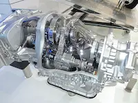

Understanding Subaru Valvebody Solenoids
Subaru CVT transmission uses solenoids to control AWD,Hydraulic pressure, and torque converter operation.This site helps Subaru owners understand,know when to service and maintain cvt solenoids for better performance and fuel economy.

What You will learn
- Common Subaru CVT solenoid problem
- What the AWD and Lockup solenoids do
- Symptoms of a failing Valvebody solenoid
- Cost, availability, maintenance tips
- technician insights from real Subaru experience